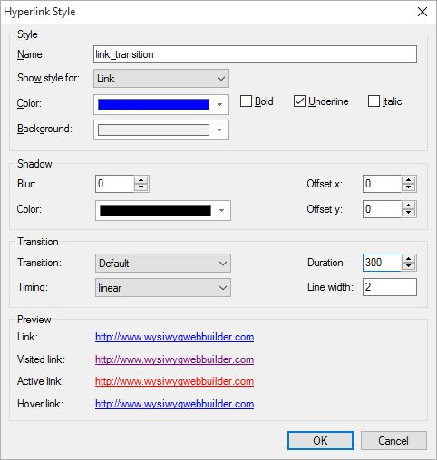

Link transitions
This tutorial explains how to use CSS3 transitions to create fun link effects and enhance user experience. Transitions will be triggered when the user moves the mouse cursor over a text link. Note that CSS3 transitions are only supported by modern browsers.
Link transitions are set up in hyperlink styles. Hyperlink styles can be used with standard text links and with the text menu.
Step 1
Let's start with a basic color fade transition. When the links are hovered over, they will fade into a different color as opposed to immediately switching.
• Open the Style Manager
• Click 'Hyperlink styles'
• Click 'Add' to create a new hyperlink style.
• Enter a name for the style for example: link_transition
To activate the transtion effect we need to set the Duration. The default value is 0, which means no effect. Change it to 300 milliseconds.
This tutorial explains how to use CSS3 transitions to create fun link effects and enhance user experience. Transitions will be triggered when the user moves the mouse cursor over a text link. Note that CSS3 transitions are only supported by modern browsers.
Link transitions are set up in hyperlink styles. Hyperlink styles can be used with standard text links and with the text menu.
Step 1
Let's start with a basic color fade transition. When the links are hovered over, they will fade into a different color as opposed to immediately switching.
• Open the Style Manager
• Click 'Hyperlink styles'
• Click 'Add' to create a new hyperlink style.
• Enter a name for the style for example: link_transition
To activate the transtion effect we need to set the Duration. The default value is 0, which means no effect. Change it to 300 milliseconds.
Step 2
Apply the style to a link.
• Insert a Text Menu
• Select the style we've just created.
Apply the style to a link.
• Insert a Text Menu
• Select the style we've just created.
Step 3
Publish or Preview the page to see the transition effect in action.
Publish or Preview the page to see the transition effect in action.
Click OK to save the style.
Related tutorials:
Change the color or style of a hyperlink
An introduction to CSS3 animations
Start and stop CSS3 animations with Events
An introduction to CSS3 transitions
Change the color or style of a hyperlink
An introduction to CSS3 animations
Start and stop CSS3 animations with Events
An introduction to CSS3 transitions

Step 4
Besides basic color fading, WYSIWYG Web Builder also supports animating the underline (also known as text decoration) of the link.
Besides basic color fading, WYSIWYG Web Builder also supports animating the underline (also known as text decoration) of the link.
Examples: